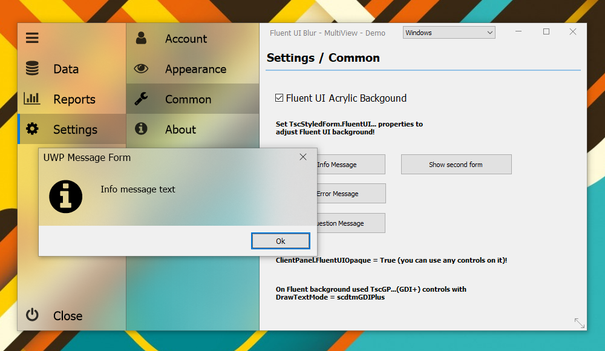
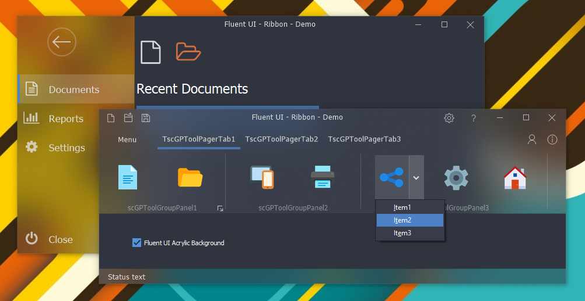
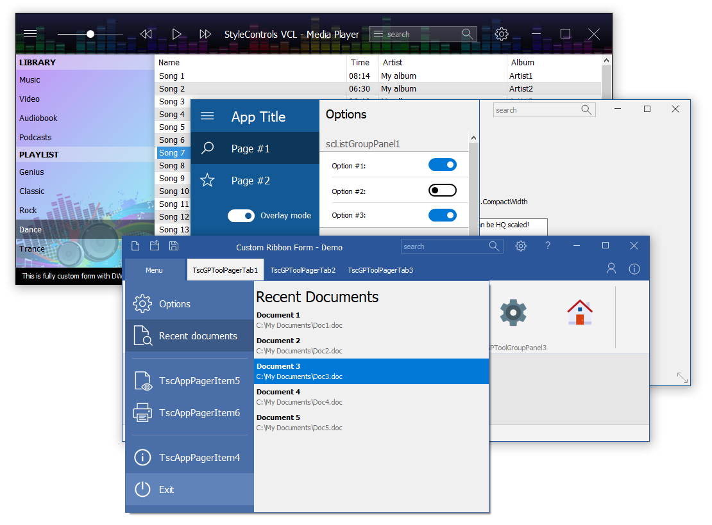
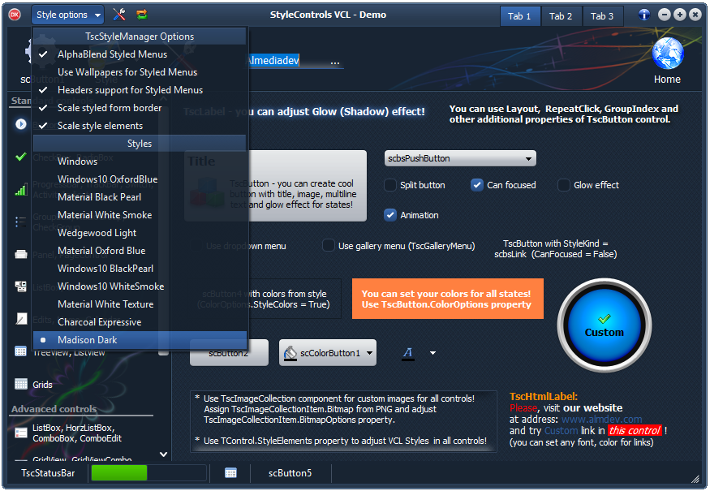

StyleControls Features



- set of controls to create Windows 10 Modern UI Applications (UWP design)
- Windows 10 Fluent UI Acrylic background support (for XE3+ version)
- support of classic drawing, system Themes and VCL styles in all elements and in all controls
- collection
of controls, which based on GDI+ vector graphic (controls can
automatically use colors from styles or custom colors for different
elements)
- support of High-DPI VCL Styles (new for 10.4 Sydney)
- Per-Control Styling support (new for 10.4 Sydney)
- special component to add buttons, tabs in NC area of the styled form and improve behavior of the form
- special
component to improve behavior of the styled menus + add alphablend
transparency, wallpapers for the styled menus (styled menus works since
XE2)
- High-DPI (scaling) support for controls and forms to
any scale factor (100%, 125%, 150% - 200% and more ("Enable High-DPI"
option available sinse 10 Seattle))
- auto adjust style elements to scale controls and styled form border
- custom
images support for custom style in many controls (you can define custom
images collection, which based from PNG files and use it in
controls)
- many options in controls to adjust diffrent style kinds of controls (combination of themes, styles and custom graphic)
- advanced controls with transparency, different types of borders, wallpapers, including wallpapers with alpha-channel
- glow
and animation effects on controls: system animation for buttons, glow
(shadow) effect for labels, text on controls, glow selections and more
- advanced label with glow effects
- advanced html label control
- advanced
listboxes, comboboxes, a lot of editors with different types, memo
with transparency, wallpapers and a lot of additional properties
- advanced buttons, checkbox, radiobutton with many style kinds and with a lot of functionality
- advanced panel, groupbox, tab controls with a lot of style kinds and a lot of parameters for adjusting
- treeview, listview components, which fully support Themes and VCL Styles + additional features for adjusting
- cool office controls to show galleries of icons, grid views and more
- shell controls with thumbnails support
- grids with transparency, wallpapers, transparent editors and more features
- ability to create custom dropdown (popup) form and link it to control
- DB controls
- different pager controls with a lot of advanced features
- touch scrolling support in controls
- special
adapting unit (available for registered version) to support VCL
Styles in DevExpress controls (QuantumGrid, Scheduler and more
(v. 12+ are supported))
- really easy to use and adjusting controls for standard themes and VCL Styles
- 64-bit support
- many more...